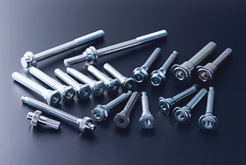
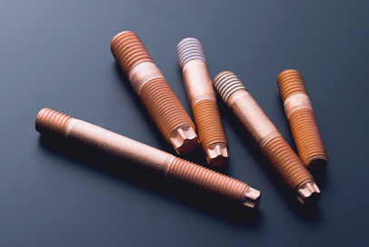
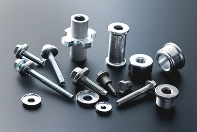
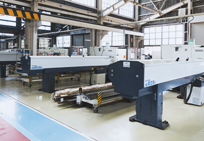
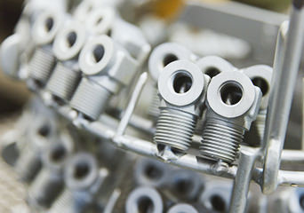
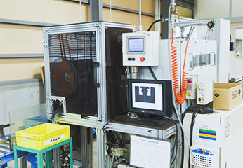
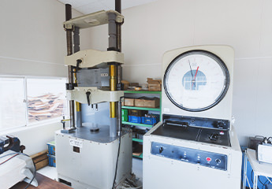
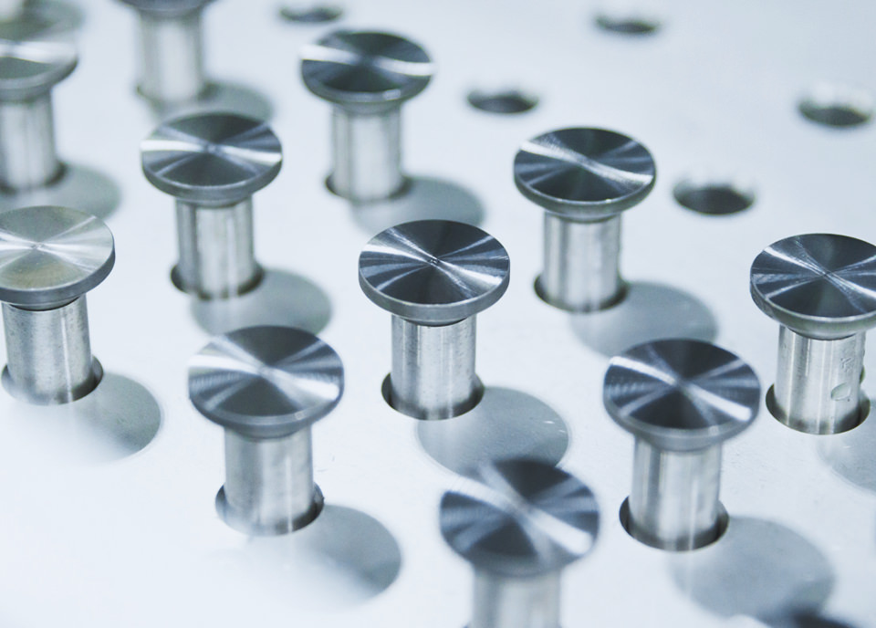

2024.04.23
A PIONEER OF COLD FORGING.
日本発の、
世界初を生み出す技術
� 藤螺子製作所は国内でいち早く冷間鍛� に取り組み、
独創的な技術とノウハウを武器に、不可能を可能にする冷間鍛� のパイオニアです。
2022年、SUS316より耐食性が高くSUS304より高強度である二相系ステンレス(SUS329J4L)の
冷間鍛� によるボルトの製品化に成功しました。
©2022 KATO SCREW Co. Ltd, All Rights Reserved.
試作のご相談
VE・VA提案から量産化、共同開発まで。
業界は問いません。� 藤螺子製作所をご活用く� さい。
SPIRIT OF CHALLENGE
誰もできないこと、
困難すらも
冷間鍛� で乗り越えていく
� 藤螺子製作所は冷間鍛� が困難とされる材質・形状において、
冷間鍛� 化に成功した数々の実績があります。
例えば、アルミボルトは日本でも数少ない冷間鍛� 化による強度アップを実現。
アルミワッシャーボルトはこれまでに世界規模で実例の少ない材料の冷間鍛� 化に成功し、
さらに硬さHV115以上のアルミワッシャー量産化に繋げました。
私たちは冷間鍛� のスペシャリストとして新たな挑戦を続けます。
日本のモノづくりを支えるのは、いつの時代も� 藤螺子製作所の部品であり続けるために。
特殊材・特殊形状製品への挑戦
冷間化困難な製品の冷間鍛� 化に成功
-
非調質鋼 NHF鋼の冷間鍛� 化に成功
-
耐熱鋼 SUH3の冷間鍛� 化に成功
-
アルミ T6処理材の冷間鍛� 化に成功
数字が物語る� 藤螺子製作所の価値
-
豊富な設備群＆高精度な� 工力
- 30種類以上約300台の設備
- ±0.01mmの高精度寸法公差への
こ� わり - 首下長さMAX300mm
（冷間鍛� 機）
-
あらゆるニーズに答える生産力
- 冷間鍛� による月産� 工数
約500万個！大量生産可能 - 1個～の少量品も受注可能
（初期段階からの開発協力）
- 冷間鍛� による月産� 工数
-
安心＆信� �の企業力
- 創業1939年(昭和14年)
- 取引社の総数165社 （国内全自動車メーカー、
世界の有名自動車メーカー含む） - リピート率ほぼ100%(毎日、毎月、数年おき等)
-
製品納入先
- 日本25都道府県に納入
- 世界12ヶ国に製品を納入
続々と拡大中
-
多品種製� メーカー
- ジョイント、コネクター、ボルトなど
9,000品番 - 流動数
4,000~5,000品番
- ジョイント、コネクター、ボルトなど
-
国内トップレベルの開発力
- アルミボルト5T相当を実現
- 硬さHV115以上の
アルミワッシャー量産化に成功（意� 登録）
-
高い品質力と環境配慮
- 大手自動車メーカーから
10年以上優良品質賞の授与 -
- ISO9001認定
- ISO14001認定
- IATF16949（中国工� �）
- 大手自動車メーカーから
-
連携網で多様なニーズを解決
- 海外6� 点
- 中国
- 香港
- メキシコ
- タイ（2� 点）
- インドネシア
- 協力会社数75社
- 海外6� 点
-
日本で唯一GFA� 入
- 世界8社のファスナーメーカーとの
アライアンス契約 - 2004年からグローバル推進を開始。世界各国で対応可能に
- 世界8社のファスナーメーカーとの
工� �案内
部品・粗材の最適供給のため、国内では福島県に白河工� �を構えました。また現地調達化と現地生産化に向けて、中国・タイにも海外工� �を展開。
いずれの工� �も材料調達から粗材成形・2次� 工まで多様な需要に応える、社内一貫生産体制を敷いています。
-
冷間鍛� 設備
COLD FORGING EQUIPMENT -
熱処理設備
HEAT TREATMENT EQUIPMENT -
切削� 工設備
CUTTING EQUIPMENT
-  切削� 工設備
- メッキ
-  ジオメット
-  検査設備
-  試験設備
大量生産×高品質な製品に
24時間稼働でお応えします
白河工� �には冷間鍛� を中心に切削、転� 、� �削など2次� 工設備が充実。
熱処理、メッキ、ジオメットにも対応可能です。
スライドピンやスタッドボルトをはじめ、多くの部品を冷間鍛� で製� しています。
冷間鍛� による� 工数
月産500万個
-
スライドピン
月産180万個 -
スタッドボルト
月産140万個 -
防振部品
月産60万個
 白河工� �紹介
白河工� �紹介
製品・技術情� �
� 藤螺子製作所の技術を
多くの業界へ
非調質鋼・耐熱鋼・アルミといった材質の冷間鍛� 品や切削� 工品をご紹介します。他社には断られた複雑で特殊な形状の部品でも高精度かつ高速に� 工します。� 工能力や主要設備、対応可能な形状・サイズに関する情� �をご希望の方は、こちらのページをご覧く� さい。
